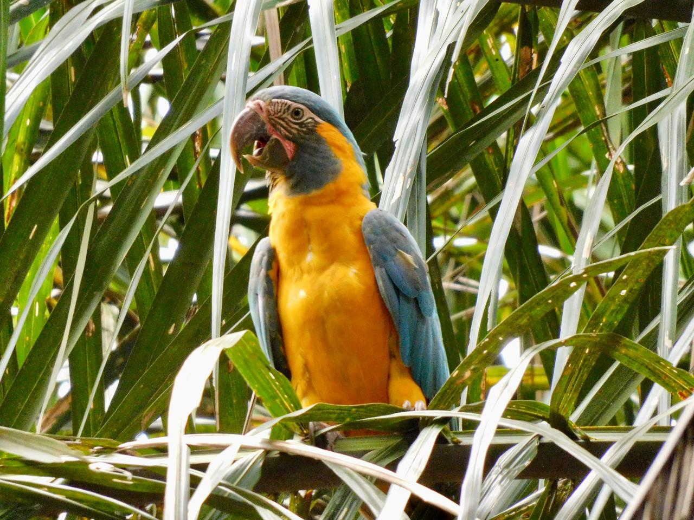
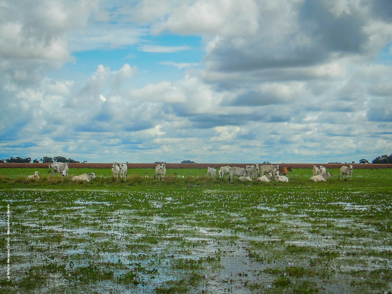
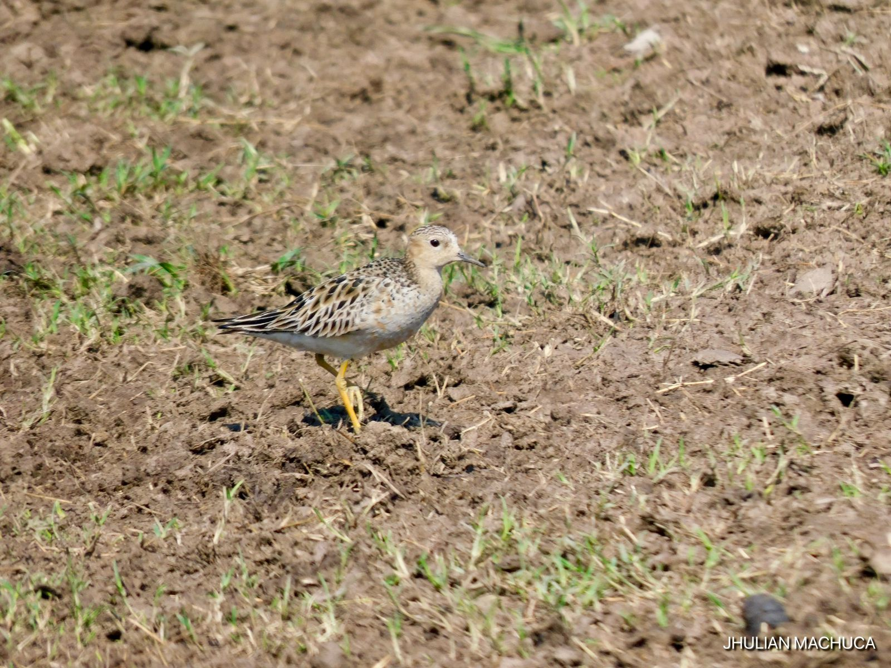
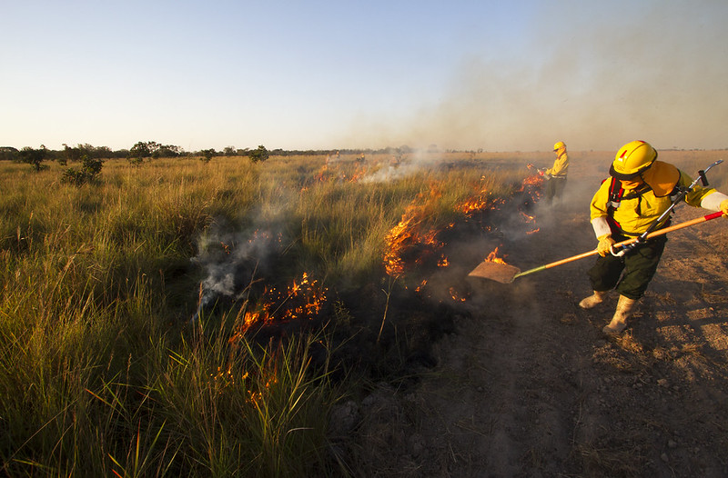
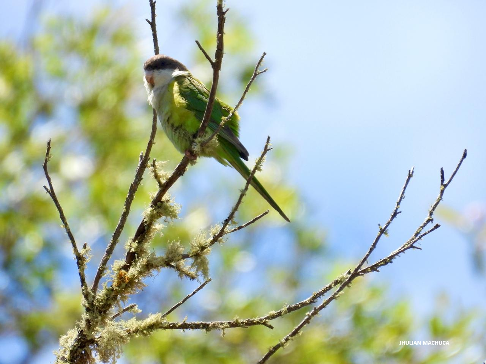
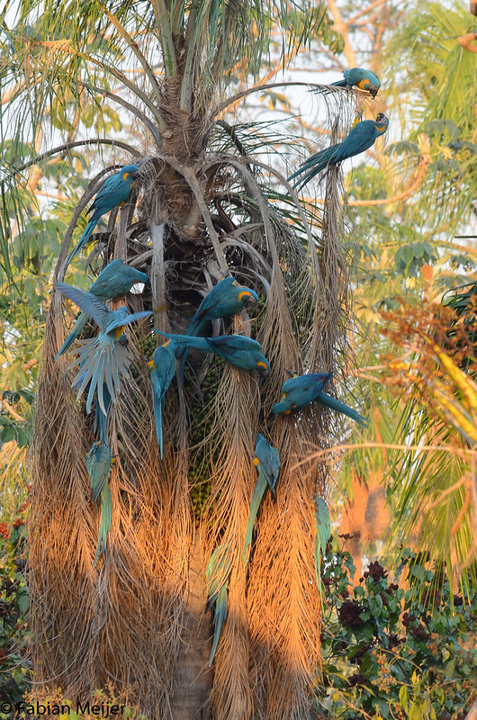

Bolivia's Rarest Macaw
The Blue-throated Macaw (Ara glaucogularis) is endemic to Bolivia, restricted to the Llanos de Moxos, and classified as Critically Endangered. Its wild population is one of the smallest among macaws in the world. The 2015 national census estimated between 315 and 450 individuals in the wild.
Ten years later, a second national census was conducted to update this figure and evaluate the impact of conservation actions. Results show that the population has increased at key sites, indicating that the interventions are working. Read the 2025 Census →
The program focuses on consolidating this positive trend through direct habitat management, nest protection, and applied scientific research. Work is implemented primarily in two key areas: the Barba Azul Nature Reserve and the Laney Rickman Reserve.
.jpg)
.jpg)

Discover Barba Azul Nature Reserve
Established in 2008, the Barba Azul Nature Reserve protects 12,200 hectares of flooded savannas in the Beni department, 75 km from Santa Ana de Yacuma. It is the most important nucleus of the wild Blue-throated Macaw population, with over 200 individuals recorded in the landscape during the 2025 census and roosts of up to 140 individuals.
The reserve combines strict protection (5,000 ha) with sustainable productive management (7,200 ha), integrating habitat restoration, fire management, and sustainable ranching. After 15+ years of continuous management, it sustains the highest known concentration of the species and has been recognized as a site of continental importance for migratory birds.
Conservation in Action
Multiple complementary programs work together at Barba Azul to protect the Blue-throated Macaw and its entire ecosystem.
.jpg)
Ecotourism
The reserve has operational visitor infrastructure: four cabins with private bathrooms, a trail network, and access to savanna, forest, and wetland habitats. Revenue is reinvested directly in species conservation and reserve management.
Over 350 bird species recorded, with regular Blue-throated Macaw sightings — especially March to October. One of Bolivia's most complete birding destinations.

Sustainable Ranching
Cattle ranching is used as a conservation tool in natural savannas, maintaining grassland structure and preventing degradation. The system demonstrates that production at scale can coexist with ecological functionality.
Integrating stocking rates, rotation, and landscape management, we are close to our goal of 1,200 head of cattle — a replicable model for the entire Beni region, where ranching dominates land use.
.jpg)
Field Research
The reserve functions as an active field station hosting researchers from national and international universities, with work in biology, botany, archaeology, and landscape ecology.
Continuous monitoring through camera traps and resource tracking generates applied data, positioning Barba Azul as a leading research platform for flooded savanna ecosystems.

Migratory Birds & Grasslands
The Llanos de Moxos form part of South America's continental migration routes. Barba Azul is a key site within the Western Hemisphere Shorebird Reserve Network (WHSRN), with sustained monitoring since 2014.
Thousands of shorebirds pass through each year, including the Buff-breasted Sandpiper (Calidris subruficollis). Pasture management, fire, research, and conservation converge in one integrated system.

Fire Management
Fire management includes the maintenance of 60+ km of firebreaks, prescribed burns, and spatial planning — reducing uncontrolled fires and maintaining natural grassland dynamics.
Barba Azul serves as a pilot site demonstrating how, when, and where to burn responsibly — a model for the entire Beni landscape where uncontrolled intentional fires are a recurring challenge.
.jpg)
Volunteering
The reserve welcomes volunteers who support monitoring activities and field management in one of the most biodiverse and remote corners of Bolivia — an unforgettable hands-on conservation experience.
Volunteers work alongside the reserve team on bird counts, camera trap checks, plant monitoring, and habitat management, gaining direct experience in tropical savanna conservation.
Laney Rickman Reserve
The Laney Rickman Reserve is the second pillar of our Blue-throated Macaw conservation program, focusing complementary efforts on different subpopulations and conservation strategies across the Llanos de Moxos.
Together, both reserves form an integrated conservation network covering the most critical areas for the long-term survival of this species in Bolivia.
More info →.jpg)
.jpg)
Historic Wins for One of Bolivia's Most Unique Wildlife Reserves
.jpg)
The Cock-tailed Tyrant, Sharp-tailed Tyrant and Black-masked Finch, the Near Threatened Orinoco Goose and Greater Rhea.
Now totaling 12,200 ha — an expanded, protected sanctuary spanning 30,147 acres.
Generating $16,183 USD in community-based ecotourism.
.jpg)
Dedicated to Eco-Ranching, promoting sustainable land use and wildlife-friendly livelihoods.


Do You Want to Be an Amigo of the Blue-throated Macaw?
Joining the Barba Azul Amigo community means becoming part of a global network of people proving that conservation works. Every month, your contribution keeps rangers in the field, scientists collecting data, and fire management teams protecting thousands of hectares of irreplaceable savanna that cannot be found anywhere else on Earth.
As an Amigo, you'll hear directly from the people doing the work — field reports, wildlife photos, and stories from the ground, so you know exactly what your gift is achieving. A monthly gift of $25 or more makes all of this possible.
Videos
Protection and Conservation of the Blue-throated Macaw Habitat
Cattle Ranching and Conservation in the Llanos de Moxos
Two Borochis Together — Camera Trap, Jan 2022
Borochi — Camera Trap, Dec 2022
.jpg)
Borochi — Camera Trap, May 2022
.jpg)
Borochi Playing — Camera Trap, May 2022
Puma Interview
.jpg)
Searching for the Blue-throated Macaw — Walk at Barba Azul, Beni
Giant Anteater Late-Night Bath
.jpg)
Spot Reserva Natural Barba Azul (Spanish)

Barba Azul Nature Reserve — Tourism Spot 2019
BANR Spot v10
Reports & News
We periodically produce reports describing conservation actions at Armonía's reserves. Reading our reports is a great way to stay up to date with all the fascinating news about Bolivia's most threatened species.
View Reserve Reports
Stay Connected to our Conservation Updates
Follow Us on Social Media
Do you want to visit the Reserve?
Bolivian tourists and foreigners with Bolivian residency should contact us directly (WhatsApp or email above)